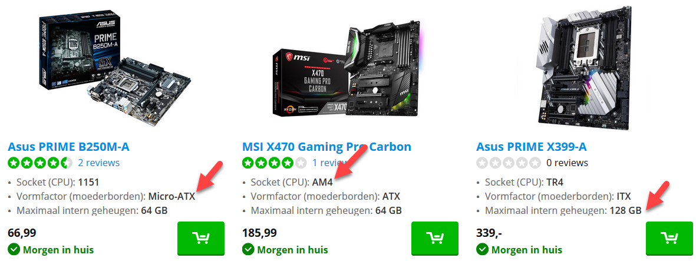
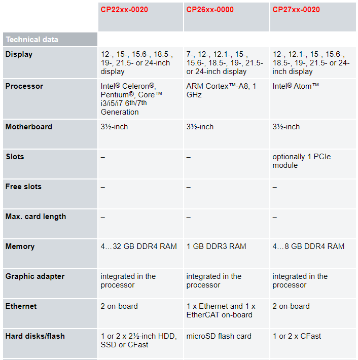

De keuze voor een bepaald moederbord bepaalt de rest van de componenten zoals:
Meestal begin je met het kiezen van een processor. Dit is vaak het duurste component met een vrij grote invloed op de prestaties van je computer. De processor zal dan bepalen welke socket er aanwezig moet zijn op het moederbord en van daaruit kan je dan verder bekijken welke vormfactor je wil, hoeveel RAM er aanwezig moet zijn.

Als je een industriële computer koopt, dan koop je een reeds samengesteld systeem. Een ander type is een andere configuratie en de fabrikant past zelf het moederbord aan.

De zaken waarmee je rekening moet houden zijn wel nog dezelfde:
Maar je hoeft je geen zorgen te maken of alles compatibel is met elkaar. Je kiest enkel de uitvoering zodat ze compatibel is met de toepassing die je wil draaien.